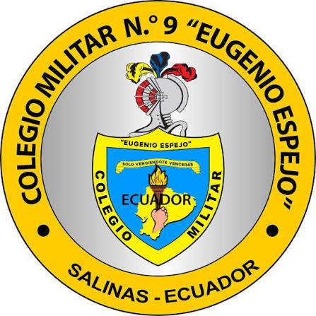
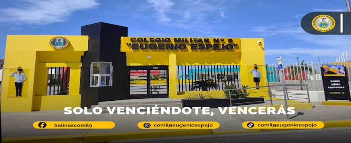

El Colegio Militar N.º 9 “Eugenio Espejo” (COMIL 9) de Salinas nació en 1950 a partir de casas maternales ubicadas en unidades militares de la Puntilla de Salinas. El 17 de julio de 1957 adoptó el nombre del insigne pensador ecuatoriano Eugenio Espejo, consolidando una larga trayectoria de formación cívica, militar y académica en la provincia de Santa Elena.Orígenes y Fundación1950: Se fundan casas maternales en zonas militares de Salinas (como el Grupo de Artillería Atahualpa) usando antiguos dispensarios médicos para apoyar a familias militares.1957: El 17 de julio, se inicia la matriculación oficial del jardín de infantes y se nombra a la institución en honor a Eugenio de Santa Cruz y Espejo.Crecimiento y Consolidación1977: Los ministerios de Defensa y Educación firman un convenio clave para fortalecer l a estructura académica del plantel.Evolución: La institución pasó de ser un centro inicial de ayuda familiar a convertirse en una Unidad Educativa militar de referencia en la Costa ecuatoriana.Actualidad: El Colegio Militar N.º 9 “Eugenio Espejo” equipos tecnológicos Ofrecemos para los cadetes computadoras, accesorios,impresoras y soluciones informaticas con alta calidad y garantía oficial.
